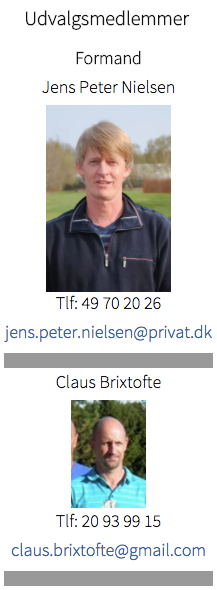
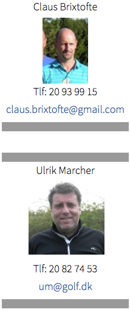
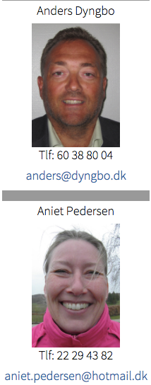

<div class="pages">
  <div data-page="elite" class="page navbar-fixed toolbar-fixed" >
    <div class="navbar">
      <div class="navbar-inner">
        <div class="left">
          <a href="#" class="link back icon-only"><i class="icon icon-back"></i></a>
          <!-- <a href="#" class="back link icon-only"><i class="icon icon-back"></i></a> -->
        </div>
        <div class="center">Eliteudvalget</div>
        <!-- <div class="right"></div> -->
        <div class="right">
        </div>
      </div>
    </div>
    <div class="page-content" style="padding-top:45px;">
       <div class="content-block">
          <p>Formålet med elitearbejdet i Hornbæk Golfklub er at give klubbens medlemmer, uanset køn, mulighed for at udvikle deres golftalent, indenfor de givne fysiske og økonomiske rammer.
          <br /><br />
            Det er klubbens ønske, at den kan danne rammen om et seriøst elitearbejde, herunder at den kan stille den fornødne trænerkapacitet til rådighed for spillere, der vil dyrke golfen på et højt sportsligt niveau.
             <br /><br />
            Hornbæk Golfklub prioriterer de holdmæssige resultater. Hornbæk Golfklub vil forfølge denne målsætning ved en stadig forbedring af de enkelte spillerespræstationer. Dette betyder at der vil blive prioriteret tid og økonomi på fremme af spillere med et særligt talent således at disse kan bidrage til holdets præstation.
             <br /><br />
            Kommissorium for eliteudvalget:<br /><br />
            • Eliteudvalget er ligesom øvrige udvalg i Hornbæk Golfklub et udvalg, der fungerer som Bestyrelsens ”forlængede arm” på de nævnte områder, d.v.s. at udvalget udfører de af Bestyrelsen definerede praktiske opgaver.<br />
            • Da Bestyrelsen overfor klubbens medlemmer har ansvaret også for udvalgenes dispositioner, træffes beslutninger af større økonomisk betydning eller beslutninger af mere principiel sportspolitisk art i Bestyrelsen.<br />
            • Eliteudvalgets formand og øvrige medlemmer udpeges/afsættes alle af klubbensns Bestyrelse. Der udpeges et antal medlemmer som skønnes hensigtsmæssigt.<br />
            • For medlemmer af eliteudvalget, der udpeges efter 01.oktober 2003, gælder, at det er en forudsætning, at den pågældende forinden giver skriftlig samtykke til at Hornbæk Golfklub hos Rigspolitichefen kan indhente oplysninger i henhold til Bekendtgørelse om behandling af personoplysninger i Det Centrale Kriminalregister § 36, eller senere tilsvarende bestemmelse.<br /><br />
            § 36: Rigspolitichefen kan efter begæring til brug for  ansættelse eller beskæftigelse af personer, der som led i ansættelsen eller beskæftigelsen har en direkte kontakt med børn under 15 år, videregive oplysninger fra efterforskningsdelen om afgørelser, som er eller har været optaget i afgørelsesdelen, og som omfatter overtrædelse af straffelovens § 222, § 222, jf. §§ 224 og 225, og § 235 samt om overtrædelse af §§ 210 og 232, hvis forholdet er begået mod et barn under 15 år.
            <br /><br />
            Eliteudvalgsmøder og referat:<br /><br />
            • Eliteudvalgsmøder afholdes så ofte som det af udvalgets medlemmer skønnes fornødent. Er udvalgets medlemmer ikke enige om de formelle vilkår for indkaldelse og afholdelse af møderne, udstikker Bestyrelsen retningslinier herfor.<br />
            • Der tages referat af møder i udvalget. Der udleveres en kopi heraf til sekretariatet, hvor referatet skal være tilgængeligt for Bestyrelsen.
            <br /><br />
            Målsætning:<br /><br />
            • Formålet med elitearbejdet i Hornbæk Golfklub er at give klubbens medlemmer, uanset køn, mulighed for at udvikle deres golftalent, indenfor de givne fysiske og økonomiske rammer.<br />
            • Det er klubbens ønske, at den kan danne rammen om et seriøst elitearbejde, herunder at den kan stille den fornødne trænerkapacitet til rådighed for spillere, der vil dyrke golfen på et højt sportsligt niveau.<br />
            • Hornbæk Golfklub prioriterer de holdmæssige resultater. Hornbæk Golfklub vil forfølge denne målsætning ved en stadig forbedring af de enkelte spilleres præstationer. Dette betyder at der vil blive prioriteret tid og økonomi på fremme af spillere med et særligt talent således at disse kan bidrage til holdets præstation.
             <br /><br />
            Fortrinsret for eliteturneringer:<br /><br />
            • Eliteudvalget har en af bestyrelsen godkendt fast fortrinsret på 1. tee hver uge til afvikling af Hornbæk Elitematch. Banelukning og fortrinsret derudover kan kun give med bestyrelsens godkendelse.
             <br /><br />
            Opgaver:<br /><br />
            • Eliteudvalget har til opgave at organisere elitearbejdet og varetage elitespillernes interesser.<br />
            • Eliteudvalget har ansvaret for udtagelse af grupper under eliteudvalget, samt for at fastsætte retningslinierne for deltagelse i de enkelte grupper.<br />
            • Eliteudvalget skal i samarbejde med klubbens pro tilrettelægge træning, turneringer, regel-undervisning mm, der giver klubbens bedste spillere mulighed for at opøve deres færdigheder i golfspillet, spillets regler og etikette.<br />
            • Eliteudvalget vurderer det hensigtsmæssige i at stille klubhold i divisions/danmarks-turneringen.<br />
            • Eliteudvalget udpeger holdkaptajner for alle Hornbæks hold inden for divisions/danmarksturneringen. Holdkaptajnerne skal forudgående godkendes af Bestyrelsen.<br />
            • Eliteudvalget skal rådgive elitespillerne om disses muligheder for at tilrettelægge et hensigtsmæssigt individuelt turneringsprogram, indenfor de givne økonomiske rammer.
            <br /><br />
            Økonomi:<br /><br />
            • Eliteudvalget udarbejder forslag til de årlige budgetter for såvel indtægter som udgifter. Budgettet skal indeholde alle udgifter til træning, stævner, arrangementer, transport, mødeaktivitet og forplejning. Undtaget er omkostninger til klubbens Pro.<br />
            • Udgifter skal attesteres af udvalgsformanden. Udvalgsformanden kan tildele rettet til at attestere fakturaer vedrørende holdmatcher til de respektive holdkaptainer.<br />
            • Eliteudvalgets arbejde er frivilligt ulønnet arbejde.
            <br /><br /> 
            Samarbejde:<br /><br />
            • Udvalget skal påse og positivt medvirke til, at det daglige samarbejde mellem klubbens pro og juniorudvalg, foregår så problemfrit som muligt, og udvalget skal påse, at der hurtigst muligt tages hånd om eventuelle kilder til problemer i samarbejdet eller konkrete konflikter. Om nødvendigt inddrages Bestyrelsen heri.
            <br /><br /> 
            Sponsoraftaler:<br /><br />
            • Sponsoraftaler af enhver art, skal være godkendt af klubbens bestyrelse.
            <br /><br /> 
            Vedtaget af Bestyrelsen den 2. november 2005
            <br /><br />
            </p>
          <br />
          <br />
          
        </div>
    </div>
    </div>
    </div>
  </div>
</div>
